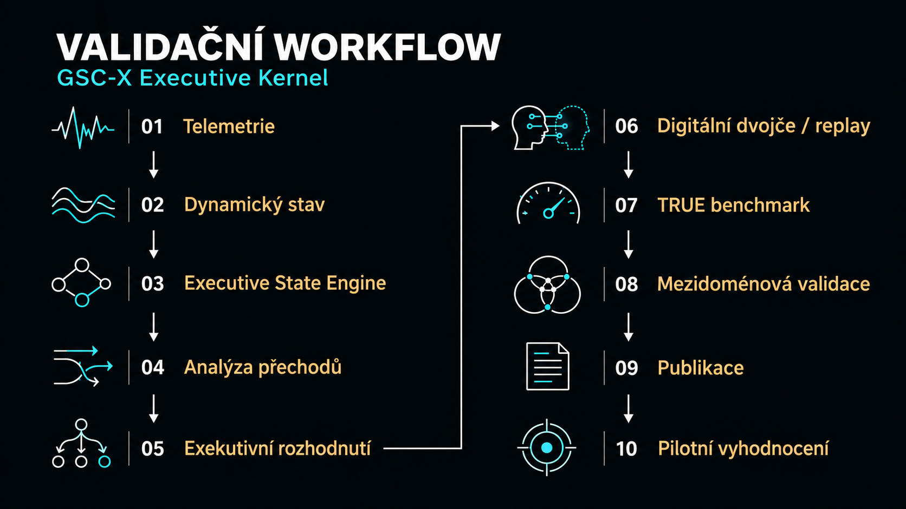

Přehled technologie
GSC-X je platformně nezávislý softwarový algoritmus s prediktivní exekutivní stabilizační architekturou pro komplexní dynamické systémy. Nad stávajícími systémy může vytvářet dodatečnou vrstvu monitoringu, časného varování, podpory rozhodování a adaptivní stabilizace.
Pozoruje dynamiku systému, vyhodnocuje vznikající nestabilitu, odhaduje odolnost a podporuje zásah dříve, než se kritické přechody plně rozvinou. Jeho účelem není povinně nahrazovat stávající řídicí systémy, monitorovací platformy ani infrastrukturu.
Executive Kernel
Executive Kernel propojuje příjem telemetrie, vyhodnocení dynamického a exekutivního stavu, analýzu přechodů, podporu rozhodování a validační zpětnou vazbu do jedné zpracovatelské pipeline.
1. Příjem telemetrie
Vstupem mohou být simulace, digitální dvojčata, replay datasety, CSV streamy, senzorová a průmyslová data, záznamy spolehlivosti, robotická prostředí, cloudová infrastruktura a doménově specifické runtime výstupy. Způsob připojení a interpretace dat se přizpůsobuje konkrétnímu systému.
2. Vyhodnocení dynamického stavu
Architektura průběžně vyhodnocuje stav systému, akumulovanou nestabilitu, provozní stres, rezervu zotavení a odchylku od bezpečných, produktivních nebo odolných režimů. Jednotlivé veličiny posuzuje v časovém kontextu, nikoli pouze jako izolovaná překročení prahů.
3. Jádrové interní indexy
Executive Kernel rozšiřuje původní logiku CM a ELI o širší vyhodnocení přechodů, rezervy a rizika.
- CM — Kontextová paměť: sleduje nedávnou dynamickou historii a kontext zotavení.
- ELI — Indikátor časné hranice: odhaduje přiblížení k budoucím provozním hranicím.
- PTM — Prediktivní paměť přechodů: zachycuje vzorce přechodů dříve, než se nestabilita stane kritickou.
- MR — Metastabilní rezerva: odhaduje zbývající kapacitu zotavení a stability.
- MRI — Index metastabilního rizika: shrnuje riziko přechodu do křehkého nebo kritického režimu.
4. Executive State Engine
GSC-X mapuje chování systému do exekutivních provozních stavů. Sleduje například vysokou rezervu, stabilitu, křehkost, nízkou rezervu, kritický stav a zotavení.
- HIGH_RESERVE
- STABLE
- FRAGILE
- LOW_RESERVE
- CRITICAL
- RECOVERY
Jde o příklady vyhodnocovaných stavů, nikoli o povinnou lineární posloupnost. Přechody závisejí na dynamice systému a konfiguraci konkrétní domény.
5. Exekutivní přechody
Vrstva přechodů sleduje degradaci, zotavení, stabilizaci a reorganizaci systému. Pomáhá rozlišovat neškodné fluktuace od strukturálně významné nestability a zachytit změnu režimu v jejím časovém vývoji.
6. Exekutivní rozhodování
Rozhodovací vrstva může podporovat varování, zmírnění rizik, směrování úloh, výběr provozního režimu, zotavení a stabilizační doporučení. Rozsah jejích pravomocí a případných zásahů určuje konkrétní integrace a validační kontext.
Universal Metastability Kernel Framework
Výzkum Executive Kernelu pokračuje vznikajícím Universal Metastability Kernel Frameworkem. Jeho cílem je sjednotit vyhodnocení exekutivního stavu, analýzu přechodů, odhad odolnosti a adaptivní stabilizaci napříč odlišnými systémy.
Mezidoménová validace zahrnuje spolehlivost, průmyslové řízení, fusion-inspired systémy, robotiku, kosmické systémy, baterie, jaderné inženýrství, energetické sítě, srdeční dynamiku, internetovou infrastrukturu a Spectral Observatory.
Framework je v současnosti výzkumnou a validační architekturou. Připravovaná samostatná publikace má poskytnout formální popis, reprodukovatelné artefakty a vědecké zasazení.
Integrační model
GSC-X je navržen jako vrstva nezávislá na konkrétním rozhraní. Může pracovat s offline daty, simulacemi i průběžnou telemetrií; dostupnost jednotlivých rozhraní závisí na konkrétní implementaci a integraci.
- CSV a strukturovaná telemetrie
- REST a vlastní API
- OPC-UA a koncepty průmyslových bran
- ROS a robotické pipeline
- Digitální dvojčata, replay validace a what-if simulace
- Cloudová, lokální a edge runtime prostředí
Budoucí rozhraní řízení v reálném čase podléhají samostatnému integračnímu a validačnímu ověření.

Workflow propojuje technické vyhodnocení s reprodukovatelnými testy a odborným reportováním. Pilotní nasazení je navazující etapa, která vyžaduje ověření v podmínkách konkrétního partnera.
Stav technologie
GSC-X Executive Kernel je implementován jako výzkumná a validační architektura s veřejnými sandboxovými prostředími, benchmarkovými výstupy, validačními reporty a publikacemi. Architekturní komponenty jsou zahrnuty v podaných patentových přihláškách.
Podané patenty: GSC-F, GSC-S, GSC-C a GSC-X.
Současným zaměřením je mezidoménová validace, reprodukovatelnost, technické reportování, formalizace Universal Metastability Kernel Frameworku a příprava pilotního vyhodnocení s průmyslovými, vědeckými, infrastrukturními a výzkumnými partnery.